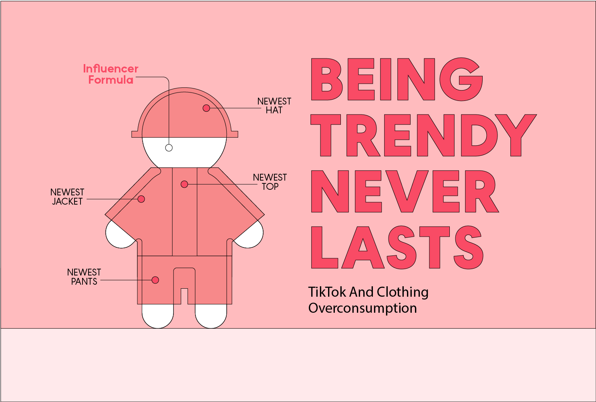

Fast fashion and the need to stay with the trend curve have always been issues, but the increase in personal media has led to an even faster trend cycle leading to more waste than ever before. I wanted to create an infographic that connected TikTok, a recently rapidly growing platform, with consumer spending.
GRAPHIC DESIGN
Overconsumption Infographic
